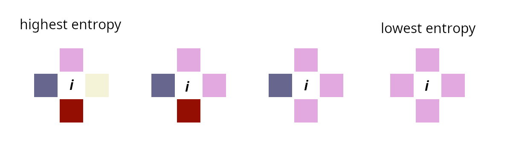
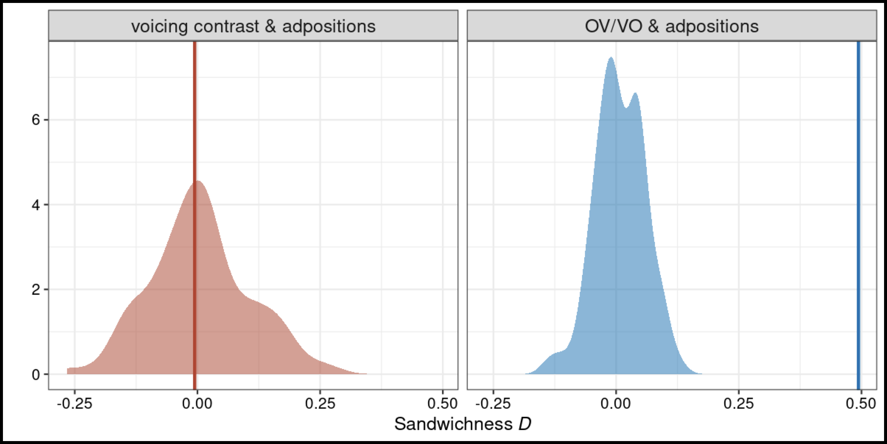
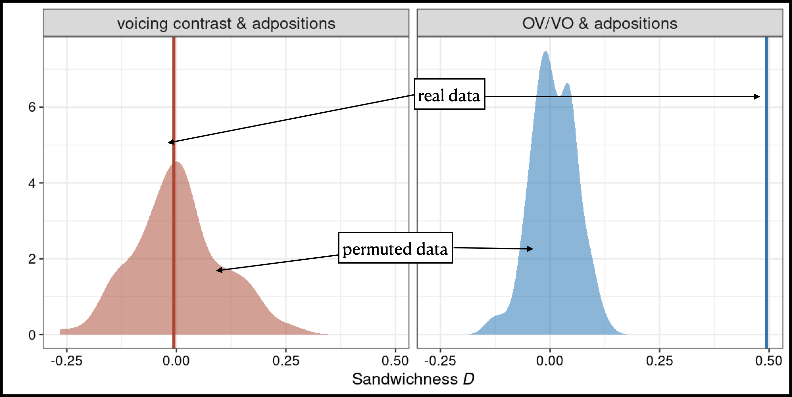
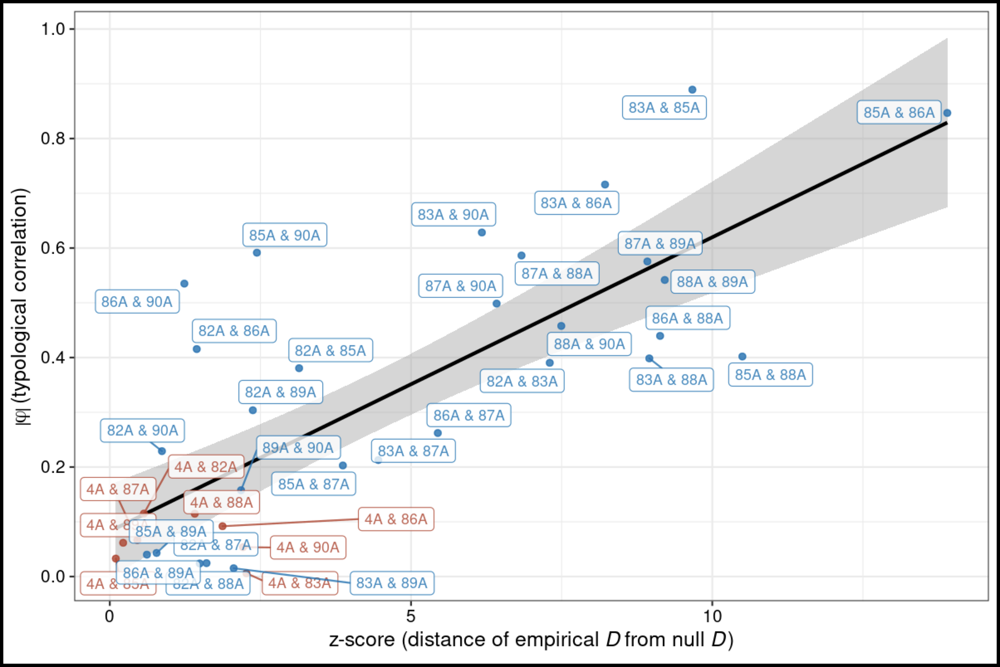
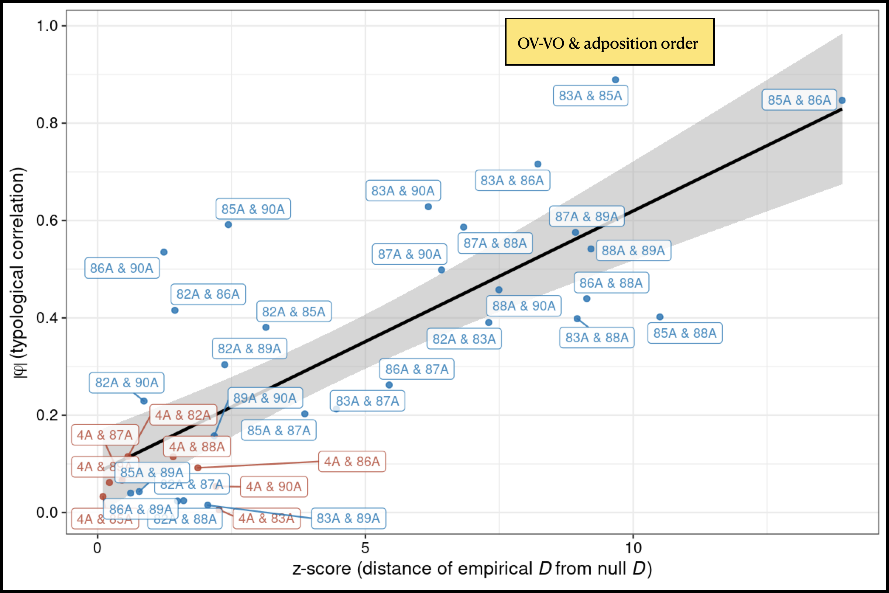

Introducing the geo-typological Sandwich Conjecture
Uppsala, Konstanz, Manchester, IFISC
typology \(\Rightarrow\) diachrony \(\Rightarrow\) typology
\(\Rightarrow\) Geo-spatial properties of linguistic features
How different are different features in their susceptibility to (different kinds of?) change?
Individual features show different kinds of spatial patterns.
Two randomly-chosen neighbours \(L_1\) and \(L_2\) are more likely to agree on basic word order than on def. art.
Heuristic: unstable features scatter, stable features cluster. (Question. Can stability be measured?)
Are features really independent? Do combinations of features have meaningful spatial distributions, too?
A pair of features that might have a [linguistic] relationship, and a pair that probably doesn’t.
Harder to “visually inspect” than the simple case (therefore motivating defining some kind of measure …)
Distribution of pair of underlyingly-related f. ≠ distribution of pair of underlyingly-independent f. (?)
Heuristic: unstable features scatter, stable features cluster. Question. Can stability be measured?
Heuristic: unstable features scatter, stable features cluster. Question. Can stability be measured?
‘Stability estimation’ usually discards spatial interactions between contiguous languages.
Heuristic: unstable features scatter, stable features cluster. Question. Can stability be measured?
‘Stability estimation’ usually discards spatial interactions between contiguous languages.
The story so far. (We think) spatial distributions of individual features emerge from properties that we can treat as inherent to each feature — probabilities of egress and ingress ⊆ parameter denoting overall feature stability.
Do combinations of features have associated geo-spatial patterning?
As, of course, in various of Greenberg’s (1968) universals …
“In declarative sentences with nominal subject and object, the dominant order is almost always one in which the subject precedes the object.”
“In languages with prepositions, the genitive almost always follows the governing noun, while in languages with postpositions it almost always precedes.”
“Languages with dominant VSO order are always prepositional.”
“With overwhelmingly greater than chance frequency, languages with normal SOV order are postpositional.”
“If a language has dominant SOV order and the genitive follows the governing noun, then the adjective likewise follows the noun.”
“All languages with dominant VSO order have SVO as an alternative or as the only alternative basic order.”
Do combinations of features have associated geo-spatial patterning?
Prediction. The environments of ‘dispreferred types’ are more varied than ‘default’.
Do combinations of features have associated geo-spatial patterning?
Intuition. The stability of a dispreferred type can be enhanced in certain configurations of contact.
(Sandwich Conjecture) Dispreferred ‘types’ should tend to be surrounded by a greater variety of types than preferred ‘types’.
| A = 1 | A = 0 | |
|---|---|---|
| B = 1 | preferred | dispreferred |
| B = 0 | dispreferred | preferred |
| VO | OV | |
|---|---|---|
| prepositions | preferred | dispreferred |
| postpositions | dispreferred | preferred |
— such that \(f(11) \approx f(00) \gg f(01) \approx f(10)\).
Solution. Make the transition rates for A (B) depend on the value of B (A).
\[ H(i) = - \sum_{t \in T} P(t, \langle i \rangle) \log P(t, \langle i \rangle) \quad \text{with} \quad P(t, \langle i \rangle) = \frac{1}{|\langle i \rangle|} \sum_{j \in \langle i \rangle} \delta_{j,t}. \]

\[ \Xi = \overline H(01) + \overline H(10) - \overline H(11) - \overline H(00) \]
i.e. entropies of dispreferred types minus entropies of preferred types
Where are we now?
Reasonable to expect typological correlations to give rise to geospatial patterns (Sandwich Conjecture).
Does this hold empirically, too?
| \(f_1\) = 1 | \(f_1\) = 0 | |
|---|---|---|
| \(f_2\) = 1 | 12 | 3 |
| \(f_2\) = 0 | 4 | 27 |
For each pair of (real-world) variables, how do \(\Xi\) and \(\varphi\) relate?
Reasonable to expect typological correlations to give rise to geospatial patterns (Sandwich Conjecture).
For each pair of (real-world) variables, how do \(\Xi\) and \(\varphi\) relate?
Reasonable to expect typological correlations to give rise to geospatial patterns (Sandwich Conjecture).
For each pair of (real-world) variables, how do \(\Xi\) and \(\varphi\) relate?
Quick illustration. The full result of this procedure for 3 WALS features: 83A, OV vs. VO, 85A, prepositions vs. postpositions, & 4A, obstruent voicing contrast.


Reasonable to expect typological correlations to give rise to geospatial patterns (Sandwich Conjecture).
For each pair of (real-world) variables, how do \(\Xi\) and \(\varphi\) relate?
Larger illustration. The result of this procedure for all the WALS word-order features vs. 4A, obstruent voicing contrast, looking at z-score \(\Xi\) (empirical - null) only.

